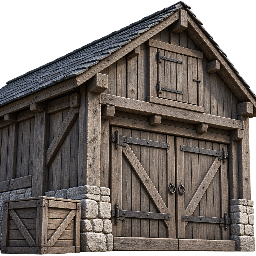
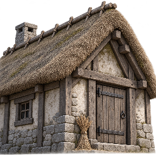
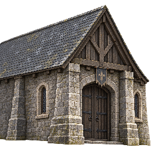
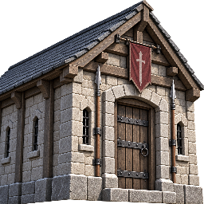
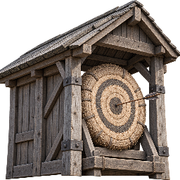
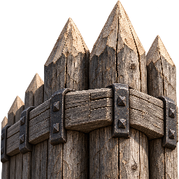
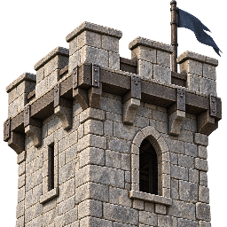

Das Lager ist die feste Perspektivreferenz: Hauptfassade rechts, Seitenwand nach links zurücklaufend. Dazu nähere Werkzeugdetails und ein korrigierter Spitzhackenschaft. Standardmäßig stehen alle neuen Symbole in 40 × 40 Pixeln, wie im Baumenü.

LagerReferenz für Richtung und Perspektive

BauernhofHofgebäude mit Reetdach

HalleEingang der Burghalle

KaserneUnterkunft mit militärischen Merkmalen

SchießplatzÜberdachter Schießstand mit Zielscheibe

PalisadeAbschnitt der Holzbefestigung

WachturmZinnen und Ausguck
Freigegeben und im Cinematic-Baumenü eingebunden.